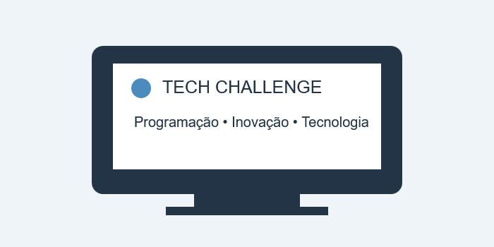

O Tech Challenge 2026 é um evento fictício criado para fins didáticos e destinado a estudantes, professores e profissionais interessados em tecnologia, programação e desenvolvimento de sistemas. O encontro reúne palestras, oficinas, atividades práticas e uma competição de programação.
O objetivo é proporcionar um ambiente de aprendizado, colaboração e troca de experiências. Durante o evento, os participantes poderão conhecer novas tecnologias, desenvolver habilidades e conversar sobre oportunidades no mercado de tecnologia.
Saiba mais sobre tecnologia e educação no Instituto Federal de Educação, Ciência e Tecnologia do Ceará (IFCE) e consulte também os recursos educacionais da W3schools .